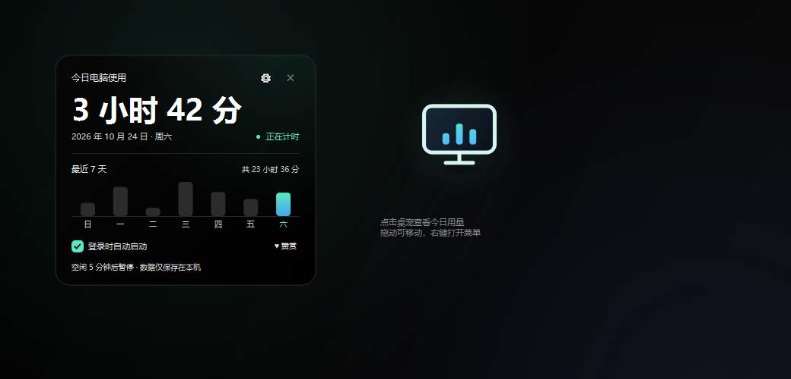
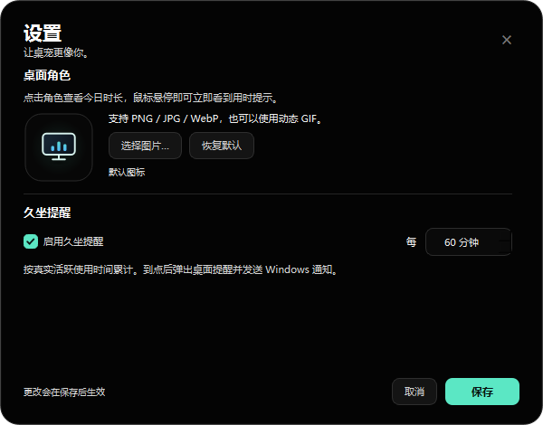
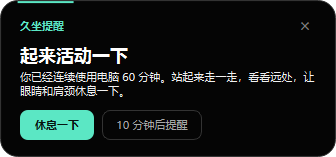

Windows 10 / 11 · 64 位
桌面上，
安静地记录时间。
一个大尺寸桌面角色悬浮在屏幕角落。点一下查看今天用了多久电脑，连续使用 60 分钟时提醒你站起来活动。只用本地数据，不上传、不同步。

安静，但不缺席
不做弹窗广告，不需要登录，所有记录都留在你的电脑里。
◷
今日时长与 7 天趋势
点击桌宠展开详情卡片，查看今天和最近一周的真实活跃使用时间。
☕
60 分钟久坐提醒
按真实活跃时间累计；到点弹出提醒，可休息重置或 10 分钟后重试。
✦
自定义桌面角色
支持 PNG、JPG、WebP 和动态 GIF，自动去除白底，保留透明悬浮感。
▣
全屏时自动隐藏
游戏或视频全屏时自动让位，提醒排队保留；退出全屏后集中提示。
↗
原生拖动
拖动交给 Windows 原生移动，鼠标与窗口严格 1:1，靠近屏幕边缘自动吸附。
⌂
开机自启，托盘常驻
登录后静默启动；托盘菜单提供设置、暂停、隐藏和退出。
界面
纯黑背景，低干扰，适合长时间放在桌面角落。


下载与安装
免安装，解压即用。整个文件夹就是程序，不需要安装器。
下载压缩包点击上方按钮，下载 MyScreenTime-v1.8.1-win64.zip。
完整解压解压出 MyScreenTime 文件夹，不要直接在压缩包里双击。
双击运行运行 MyScreenTime.exe。首次启动会自动开启开机自启，可在右键菜单关闭。
如果 Windows 提示“已保护你的电脑”，点击“更多信息” → “仍要运行”。这是因为程序没有购买商业代码签名证书，并非病毒提示。
SHA-256 校验值
bde211b9b76bdc26f587ebe9315b37622061573e7e859b4c3c485c3f38487eee